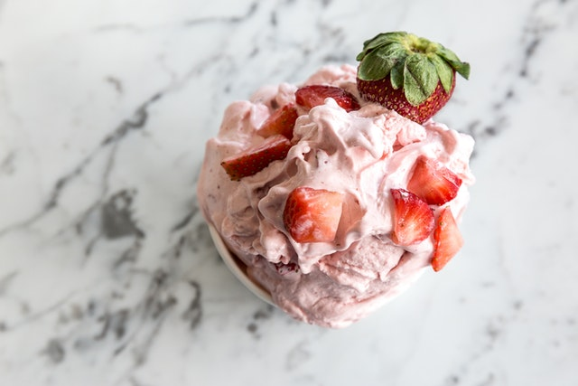

Strawberry Ice Cream

Description
Notice that this recipe requires an ice cream maker. During the summer heat it is a must to cool off. And what better way to cool off than with a yummy treat. This strawberry ice cream recipe is among the best due to its ease to follow and the rich flavor of the ice cream that it produces.
Ingredients
- 1 1/2 cups strawberries, hulled and diced
- 2 tablespoons honey
- 1/2 cup granulated sugar
- 1 teaspoon lemon juice
- 1 cup heavy whipping cream
- 1/2 cup half and half
- 1 teaspoon vanilla extract
Steps
- In a large bowl, mix strawberries, honey, sugar, and lemon juice. Allow to sit 15-20 minutes, or until the strawberries have released their juices.
- Mash the mixture with a potato masher, fork, or pastry cutter until there are no longer any large strawberry pieces (if you prefer a smooth ice cream, use a blender or food processor instead*).
- To the strawberries, mix heavy cream, half and half, and vanilla extract. Stir just until combined.
- Pour the mixture into your ice cream maker, and follow your manufacturer's instructions (mine took about 15-20 minutes to churn). You can eat the ice cream soft-serve, or freeze it in an airtight container for 3-4 hours to thicken it up slightly. For best results, allow the ice cream to sit at room temperature for about 5-10 minutes to soften before serving.